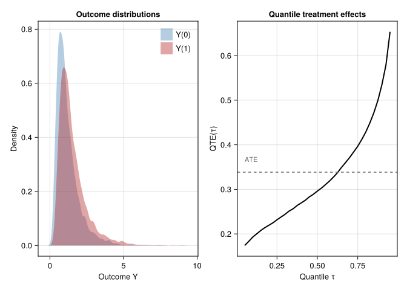
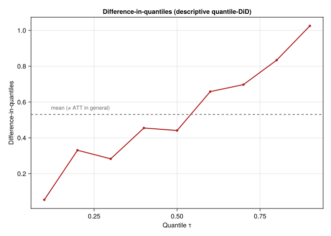

using DataFrames
using Distributions
using Random
using Statistics
using CairoMakie12 Distributional Treatment Effects
The previous chapters focus mostly on the average treatment effect. But many questions are not only about the mean. A policy can raise average earnings because high earners gain a lot, while low earners gain little. A clinical intervention can improve the median outcome but do nothing for the lower tail. To see this, we need distributional effects.
12.1 Beyond the average
The objects are the two marginal distributions \(F_{Y(1)}\) and \(F_{Y(0)}\): the outcome distribution if everyone were treated and if nobody were treated. From them we can compute quantile differences, density shifts, and inequality measures.
The most common summary is the quantile treatment effect (QTE):
\[ \text{QTE}(\tau) = F^{-1}_{Y(1)}(\tau) - F^{-1}_{Y(0)}(\tau), \quad \tau \in (0, 1). \]
QTE(\(\tau\)) reports the difference between the \(\tau\)-th quantile of the treated and control distributions. It is not the same as the average effect at a given pre-treatment quantile — QTE does not track individuals; it compares quantile to quantile across two marginal distributions.
Consider a treatment whose effect grows with the baseline outcome:
Random.seed!(42)
n = 5000
# Pre-treatment outcome (counterfactual under no treatment)
Y0 = rand(LogNormal(0, 0.6), n)
# Heterogeneous treatment effect: bigger at the top of the Y0 distribution
true_te = 0.2 .* Y0 .+ 0.1
Y1 = Y0 .+ true_te
ate = mean(Y1 .- Y0)
qte_25 = quantile(Y1, 0.25) - quantile(Y0, 0.25)
qte_50 = quantile(Y1, 0.50) - quantile(Y0, 0.50)
qte_75 = quantile(Y1, 0.75) - quantile(Y0, 0.75)
qte_90 = quantile(Y1, 0.90) - quantile(Y0, 0.90)
@printf("ATE = %.3f\n", ate)
@printf("QTE(0.25) = %.3f\n", qte_25)
@printf("QTE(0.50) = %.3f\n", qte_50)
@printf("QTE(0.75) = %.3f\n", qte_75)
@printf("QTE(0.90) = %.3f\n", qte_90)ATE = 0.339
QTE(0.25) = 0.232
QTE(0.50) = 0.296
QTE(0.75) = 0.397
QTE(0.90) = 0.535The ATE is one number. The QTEs show that the effect is much larger near the top of the distribution.
τ_grid = 0.05:0.025:0.95
qte_curve = [quantile(Y1, τ) - quantile(Y0, τ) for τ in τ_grid]
fig = Figure(size = (820, 360), fontsize = 13)
ax1 = Axis(fig[1, 1], xlabel = "Outcome Y", ylabel = "Density",
title = "Outcome distributions")
density!(ax1, Y0, color = (:steelblue, 0.4), label = "Y(0)")
density!(ax1, Y1, color = (:firebrick, 0.4), label = "Y(1)")
axislegend(ax1, position = :rt, framevisible = false)
ax2 = Axis(fig[1, 2], xlabel = "Quantile τ", ylabel = "QTE(τ)",
title = "Quantile treatment effects")
lines!(ax2, collect(τ_grid), qte_curve, color = :black, linewidth = 2)
hlines!(ax2, [ate], color = :gray40, linestyle = :dash)
text!(ax2, 0.05, ate + 0.02; text = "ATE", color = :gray40, fontsize = 11)
fig
The treatment shifts and stretches the distribution. The QTE curve shows that low quantiles move little and high quantiles move more.
12.2 Identifying counterfactual distributions
QTE requires the two counterfactual marginal distributions. Observational data gives only \(F_{Y \mid D=1}\) and \(F_{Y \mid D=0}\). Identification needs the same kind of assumptions as ATE, but applied to the whole distribution.
Common approaches are:
Inverse propensity weighting on the CDF. Estimate the propensity score \(\hat\pi(x)\) and weight observations to construct counterfactual empirical CDFs:
\[ \hat F_{Y(d)}(y) = \frac{1}{n}\sum_{i=1}^n \frac{\mathbf{1}\{D_i = d\}\mathbf{1}\{Y_i \le y\}}{\hat\pi(x_i)^d (1-\hat\pi(x_i))^{1-d}}. \]
Then \(\hat{\text{QTE}}(\tau) = \hat F^{-1}_{Y(1)}(\tau) - \hat F^{-1}_{Y(0)}(\tau)\). This is the Firpo (2007) estimator for QTE under unconfoundedness.
Distribution regression. Model \(P(Y \le y \mid X, D)\) as a flexible function of \(X\) for each threshold \(y\) (Chernozhukov, Fernández-Val, Melly 2013). Integrating out \(X\) gives the counterfactual marginal. Distribution regression handles the entire distribution simultaneously rather than estimating each quantile separately.
Generative / engression approaches. Train a stochastic model that learns \(Y \mid X, D\) as a distribution rather than a conditional mean. Sampling from the trained model gives counterfactual draws, from which any distributional summary follows. This is the route taken by Engression.jl and by Endid.jl for the DiD setting.
12.3 Distributional DiD with Engression
For panel data, distributional DiD extends the DiD idea from means to distributions. Instead of estimating only the counterfactual mean outcome, it estimates a counterfactual outcome distribution.
Endid.jl uses Engression for this. It learns a stochastic model for \(Y \mid X\) rather than only a conditional mean. Counterfactual draws from that model give QTEs.
using Endid
# Panel data: y outcome, id unit, time period, post 1 if post-treatment
# D = 1 marks treated units (optional; otherwise inferred from post)
res = endid(
df, :y, :id, :time, :post;
dvar = :D,
controls = [:age, :income],
nboot = 100,
num_epochs = 500,
hidden_dim = 64,
)
println(res) # ATT + bootstrap SE
res.qte # DataFrame of QTE estimates at default quantiles 0.1:0.1:0.9
plot(res) # QTE curve with confidence bandThe endid function returns an EndidResult containing:
att— the average treatment effect on the treated, with bootstrap SE and CIqte— aDataFrameof quantile treatment effects on the treated, one row per quantile in the grid (default0.1:0.1:0.9), each with bootstrap standard errorsmodel— the trained Engression model (for further sampling / introspection)design—"common_timing"or"staggered"depending on which interface was used
For staggered adoption (different treatment times across cohorts), use endid_staggered with a gvar column carrying each unit’s first-treatment period.
12.4 When QTE differs from ATT: a panel simulation
Now simulate panel data where the treatment effect depends on unit type:
Random.seed!(11)
n_units = 500
n_time = 4
T0 = 2 # last pre-treatment period
treated_frac = 0.5
n_treated = Int(round(n_units * treated_frac))
# Unit type (latent ability); drives both Y and the treatment effect size
ability = rand(Normal(0, 1), n_units)
# Build long panel
rows = NamedTuple[]
for i in 1:n_units, t in 1:n_time
post = t > T0 ? 1 : 0
treated = i <= n_treated ? 1 : 0
# Heterogeneous TE: large at the top of the ability distribution
te = (treated == 1 && post == 1) ? 0.4 * ability[i] + 0.5 : 0.0
y = ability[i] + 0.3 * t + te + 0.4 * randn()
push!(rows, (id = i, time = t, y = y, post = post, D = treated))
end
df = DataFrame(rows)
first(df, 5)5×5 DataFrame
| Row | id | time | y | post | D |
|---|---|---|---|---|---|
| Int64 | Int64 | Float64 | Int64 | Int64 | |
| 1 | 1 | 1 | -0.946791 | 0 | 1 |
| 2 | 1 | 2 | -0.253741 | 0 | 1 |
| 3 | 1 | 3 | 0.619691 | 1 | 1 |
| 4 | 1 | 4 | 1.32825 | 1 | 1 |
| 5 | 2 | 1 | -0.603713 | 0 | 1 |
A standard ATT regression reports the mean effect. Here that hides the fact that low-type and high-type units have different effects.
# Compute empirical QTE on the simulated data by comparing treated post-period
# outcomes to a benchmark constructed from pre-period treated outcomes shifted
# by the control units' time trend (the standard DiD-style counterfactual,
# applied at each quantile rather than at the mean).
post_treated = df[(df.D .== 1) .& (df.post .== 1), :y]
pre_treated = df[(df.D .== 1) .& (df.post .== 0), :y]
post_control = df[(df.D .== 0) .& (df.post .== 1), :y]
pre_control = df[(df.D .== 0) .& (df.post .== 0), :y]
τ_grid = 0.1:0.1:0.9
qte_did = [
(quantile(post_treated, τ) - quantile(pre_treated, τ)) -
(quantile(post_control, τ) - quantile(pre_control, τ))
for τ in τ_grid
]
result = DataFrame(quantile = collect(τ_grid),
QTE_DiD = qte_did)
result9×2 DataFrame
| Row | quantile | QTE_DiD |
|---|---|---|
| Float64 | Float64 | |
| 1 | 0.1 | 0.0542613 |
| 2 | 0.2 | 0.330757 |
| 3 | 0.3 | 0.282768 |
| 4 | 0.4 | 0.454995 |
| 5 | 0.5 | 0.441014 |
| 6 | 0.6 | 0.658351 |
| 7 | 0.7 | 0.697324 |
| 8 | 0.8 | 0.833802 |
| 9 | 0.9 | 1.02507 |
The estimated QTE curve shows larger effects at the top of the outcome distribution.
fig = Figure(size = (640, 360), fontsize = 13)
ax = Axis(fig[1, 1], xlabel = "Quantile τ", ylabel = "QTE(τ)",
title = "Empirical quantile treatment effects on the treated")
lines!(ax, result.quantile, result.QTE_DiD, color = :firebrick, linewidth = 2)
scatter!(ax, result.quantile, result.QTE_DiD, color = :firebrick, markersize = 7)
hlines!(ax, [mean(result.QTE_DiD)], color = :gray40, linestyle = :dash)
text!(ax, 0.12, mean(result.QTE_DiD) + 0.02;
text = "Mean QTE ≈ ATT", color = :gray40, fontsize = 11)
fig
The simple quantile-DiD above ignores covariate adjustment and bootstrap inference. Endid.jl adds both.
12.5 Beyond QTE: posterior bands as distributional output
TASC also produces more than a point estimate, but for a different object: the counterfactual path of one treated unit. QTE and TASC answer different questions:
- QTE / Engression DiD: how does the treatment effect vary across the marginal distribution of outcomes when many units are treated?
- TASC posterior band: how uncertain is the single counterfactual path when one unit is treated?
Use QTE when many treated units may have heterogeneous effects. Use TASC when the problem is a single treated unit with serial dependence.
12.6 Summary
- ATE summarizes the mean. QTE summarizes changes across the outcome distribution.
- QTE identification uses the same assumptions as ATE, but for CDFs.
Endid.jlestimates distributional DiD through Engression.- Report QTEs when the effect may differ across wages, test scores, health outcomes, sales, or other outcome distributions.